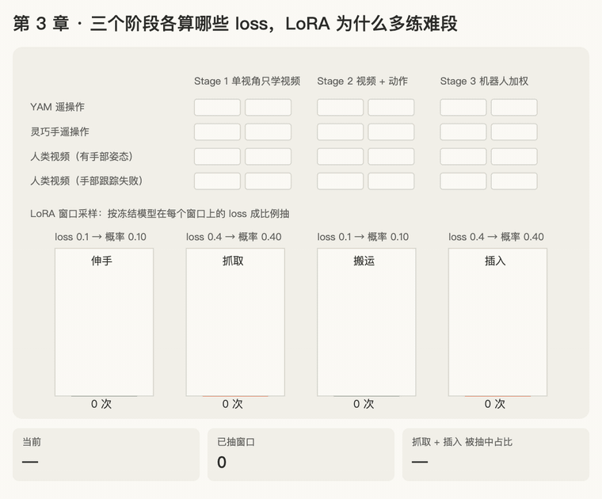

第 3 章 · 三阶段预训练与少样本适配：先学看，再学动，最后学"我的身体"
本章回答：一个视频生成模型，经过哪几步变成能控制多种机器人的策略？新任务只有 1–5 条演示时，怎么在 30 分钟里适配？
讲解日期：2026-11-15 · 上一章：第 2 章 架构 · 下一章：第 4 章 数据配方
对应原文：materials/text/gr00t2-whitepaper.txt§4.1 L873–L903；§3.1 L344–L469；附录 A.3 L2532–L2560；§4.7.1 L1529–L1556
本章缩写：LoRA = Low-Rank Adaptation（低秩 / 适配）；SFT = Supervised Fine-Tuning（监督 / 微调）；ZeRO = Zero Redundancy Optimizer（零 / 冗余 / 优化器）；BF16 = Brain Float 16（Google Brain 的 16 位浮点）；GPU = Graphics Processing Unit（图形 / 处理 / 单元）。全部缩写见 附录 · 缩写与术语表
讲解
第一步：三个阶段各学什么（2026-11-15）
类比：学开车的三段式。 先坐副驾驶看很多人开车（只看，不摸方向盘）；再自己上手，在各种车上练"看到路况怎么打方向"；最后专门在自己要开的那辆车上多练。
| 阶段 | 数据 | 视角 | 出动作吗 | 目的 | 原文 |
|---|---|---|---|---|---|
| 初始化 | Cosmos-Predict2.5-2B 视频 DiT | — | — | 继承"世界怎么动"的视频先验 | L874 |
| Stage 1 单视角视频预训练 | 主要是第一视角人类视频，补少量机器人视频 | 单路相机 | 否，只预测未来视频 | 建立"具身交互"的视觉动力学先验 | L881–L886 |
| Stage 2 多视角视频-动作联合 | 人类 + 机器人；加大 YAM 和灵巧手比例，仍保留大量人类数据 | 多路（有就用） | 是；机器人用自己的动作，人类用跟踪到的手部姿态；没有有效动作标签就不算动作 loss | 把视觉动力学接到动作上 | L887–L895 |
| Stage 3 机器人加权 | 同上，但更偏机器人（尤其 YAM） | 多路 | 是 | 让输出落到机器人自己的动作空间 | L896–L901 |
公式（按 Stage 2 的描述写的示意，权重细节正文没给）：
\(\lambda_v\)、\(\lambda_a\)（读作 lambda v、lambda a）是两项的权重；\(m\)（mask，掩码）决定动作项算不算。附录 F 式 (16) 的自模仿 loss 用的正是 \(\lambda_v\mathcal L_{\text{video}}+\lambda_a\mathcal L_{\text{action}}\) 这个形式（L5262）。
例子（编的 batch）。 一个 batch 4 条样本：
| 样本 | 来源 | 视频 loss | 动作 loss | \(m\) |
|---|---|---|---|---|
| 1 | YAM 遥操作 | 0.30 | 0.20 | 1 |
| 2 | Sharpa 灵巧手遥操作 | 0.40 | 0.50 | 1 |
| 3 | 人类视频，有手部姿态（Stage 2） | 0.35 | 0.60 | 1 |
| 4 | 人类视频，手部跟踪失败 | 0.25 | — | 0 |
取 \(\lambda_v=\lambda_a=1\)：总 loss = \((0.30+0.40+0.35+0.25)+(0.20+0.50+0.60)=1.30+1.30=2.60\)。样本 4 只贡献视频项。
一句话：Stage 1 只学看（视频），Stage 2 学看 + 动（有标签才算动作），Stage 3 把重心挪到机器人自己的数据。
第二步：预训练怎么跑起来（2026-11-15）
类比：2B 是"小车"，不用拆开装。 模型小到一张卡放得下全部参数，就不必像大模型那样把模型切到多张卡上（流水线、张量并行），每张卡各算各的 batch，只同步梯度。
| 项 | 数字 | 原文 |
|---|---|---|
| 硬件 | GB300 NVL72，每 GPU 288 GB HBM3e、约 2.5 PFLOPS 稠密 BF16 | L1531–L1534 |
| 集群 / 主训练 | 2,016 张 / 用 1,024 张 | L1536–L1537 |
| 并行 | 同步数据并行 + DeepSpeed ZeRO-2（梯度和优化器状态切分，权重每卡一份） | L1545–L1546 |
| 每卡 batch | 16 | L1548 |
| 打包 | 32,768-token 一行，填充率 94.5% | L1579 |
例子：ZeRO-2 省了多少显存（编的估算）。 2B 参数，BF16 权重 2 字节/参数 = 4 GB；Adam 优化器状态（FP32 主权重 + 两个动量）约 12 字节/参数 = 24 GB；梯度 BF16 = 4 GB。ZeRO-2 把优化器状态和梯度切到 \(N\) 张卡上：
| 不切分 | ZeRO-2，\(N=1024\) | |
|---|---|---|
| 权重 | 4 GB | 4 GB |
| 梯度 | 4 GB | ≈ 0.004 GB |
| 优化器状态 | 24 GB | ≈ 0.02 GB |
| 合计 | 32 GB | ≈ 4 GB |
剩下的 280 GB 左右都给激活值，所以每卡 batch 能开到 16。（字节数是常见混合精度 Adam 的估算，白皮书没给。）
一句话：2B 模型 + 1,024 张 GB300 + ZeRO-2 纯数据并行，显存主要留给视频激活。
第三步：少样本适配——rank-32 LoRA，30 分钟（2026-11-15）
类比：给老师傅贴一张便签。 不改老师傅的脑子（预训练权重冻结），只在每个关键位置贴一张很薄的便签（低秩矩阵）提醒"这个任务要这样"；用完把便签内容抄进笔记本（merge），以后不用再带便签。
公式。 一个线性层原权重 \(W\in\mathbb R^{d\times k}\)，LoRA 学两个小矩阵 \(B\in\mathbb R^{d\times r}\)、\(A\in\mathbb R^{r\times k}\)：
\(r\) 读作 rank（秩），GR00T 2 用 \(r=32\)。
设定（附录 A.3 L2537–L2547）： - LoRA 加在 Transformer 每一个线性层；文本编码器、VAE、动作/状态头、全部预训练权重冻结； - loss 与预训练相同（视频 + 动作 flow matching）； - 每条 episode 切 100 个均匀窗口，按冻结模型在该窗口上的 loss 成比例采样——难的阶段（抓取、插入）被多练； - 所有任务同一组超参；单张 RTX 5090 约 30 分钟；训完把 \(BA\) 合进 \(W\)，服务方式与预训练模型完全一样。
例子 1：参数量。 底座宽度 2048，一个 \(2048\times2048\) 的注意力投影：
| 参数 | |
|---|---|
| 原 \(W\) | \(2048\times2048\approx4.19\)M |
| LoRA \(B\)+\(A\)，\(r=32\) | \(2048\times32+32\times2048=131{,}072\approx0.13\)M |
| 占比 | ≈ 3.1% |
例子 2：按 loss 采样（编的数）。 一条 episode 切成 4 个窗口（真实是 100 个），冻结模型 loss：
| 窗口 | 伸手 | 抓取 | 搬运 | 插入 |
|---|---|---|---|---|
| loss | 0.1 | 0.4 | 0.1 | 0.4 |
| 采样概率 | 0.1 | 0.4 | 0.1 | 0.4 |
抓取和插入被抽到的次数是伸手的 4 倍。
结果（Dexter-50，§3.1 / Fig. 2）：零样本 40% → 1 条 71% → 5 条 95%（这 50 个任务是从"5 条能学到 ≥ 80%"的任务里挑的，L466–L467）。
一句话：冻结一切、只在每个线性层贴 rank-32 的 LoRA，难的窗口多练，30 分钟一张 5090，合并后零额外开销。
动画演示：三个阶段各算哪些 loss，LoRA 为什么多练难段

可交互版：animations/03-stages-lora.html（▶ 播放、→ 单步、↺ 从头开始；"抓取"窗口的 loss 滑块）
怎么看： 1. 上表逐列亮起：Stage 1 只有视频格，Stage 2 起有效动作标签才有动作格，Stage 3 机器人样本标"权重↑"（第一步；配比白皮书未给，只示方向）。 2. 下半部分每步按 loss 成比例抽一个窗口，柱子是累计被抽次数（第三步）。 3. 拖滑块改"抓取"窗口的 loss，看它被抽中的次数跟着变。
练习与作答记录
题 1（第一步 三阶段）：Stage 1 为什么"只预测视频、不出动作"？如果直接从 Stage 2 开始，第 1 章里那条 scaling 曲线的 0% 点和哪个设定最像？
作答：（待作答）
题 2（第一步 掩码 loss）：在第一步的例子里，若 \(\lambda_a=0.5\)，总 loss 是多少？
作答：（待作答）
题 3（第三步 LoRA）：\(2048\times8192\) 的 FFN 第一层加 rank-32 LoRA，新增多少参数？占原层的百分之几？
作答：（待作答）
口诀
先看后动再认身，一阶只把画面跟；
有标才算动作损，机器加权落自身；
贴张低秩小便签，难段多练半小时。
本章复习卡片
G07、G08（练习做完后，按答错、卡住的地方再补。）
附录 · 延伸阅读
推荐阅读
| 读什么 | 读哪里 | 读它为了什么 |
|---|---|---|
| ★ GR00T 2 白皮书 | §4.1 L873–L903 | 三阶段原文 |
| ★ GR00T 2 白皮书 | 附录 A.3 L2532–L2560 | LoRA 设定和 Dexter-50 结果 |
| GR00T 2 白皮书 | §4.7.1 L1529–L1556、附录 K.4 | 分布式训练细节 |
distributed-pretraining 工程报告 |
ZeRO 一节 | ZeRO-1/2/3 切什么 |
| LoRA 原论文（Hu et al., 2021） | §4 | 低秩更新的动机（本地未归档） |
数学原理
- 掩码损失：多源数据缺不同标签时，每项 loss 乘 0/1 掩码再求和，梯度只来自有标签的项。
- 低秩分解：\(BA\) 的秩不超过 \(r\)，参数从 \(dk\) 降到 \(r(d+k)\)。
- 重要性采样式的窗口选择：按 loss 比例采样，等价于把训练预算集中到模型最不会的地方。
公式清单
| 公式 | 意思 |
|---|---|
| \(\mathcal L=\lambda_v\mathcal L_{\text{video}}+\lambda_a m\mathcal L_{\text{action}}\) | 视频-动作联合 loss，\(m\) 是动作标签掩码 |
| \(W'=W+BA\)，\(B\in\mathbb R^{d\times r}\)，\(A\in\mathbb R^{r\times k}\) | LoRA |
| \(r(d+k)\) vs \(dk\) | LoRA 新增参数 vs 原参数 |
代码对照
本章暂无代码对照：代码发布后补 ch03_pretraining_recipe.py（掩码 loss 与 LoRA 参数量核对）。